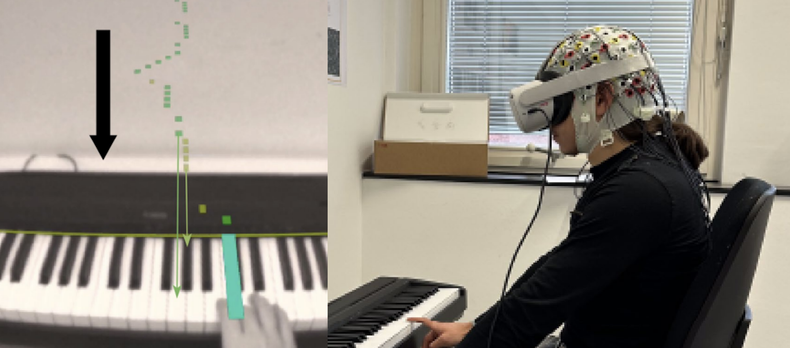

Towards a neuroadaptive augmented reality piano tutor: opportunities and challenges
Journal paper in Springer Virtual Reality

Abstract
The fusion of mixed reality with EEG-based neuro-adaptive systems are becoming increasingly popular in the field of learning and education. Their ability to detect changes in brain activity in real-time makes them unique and enables monitoring different mental states like mental workload (MWL) and mental fatigue (MF) aiming to increase learning performance. We present a neuro-adaptive system that combines an augmented reality (AR) piano tutorial with online EEG measurements of its user, delivered by a passive Brain Computer Interface (BCI) system. The MWL was measured by means of EEG and a Filter Bank Common Spatial Patterns algorithm (FBCSP) was trained to differentiate between low and high levels of MWL. Low levels were connected to the 0-back task and high levels to the 2-back task. The n-back task was a calibration task to train a binary Machine Learning (ML) classifier to differentiate between low and high MWL. This trained ML algorithm was then used as the central element of the passive BCI, which constantly classified small temporal windows of the EEG during the piano tutorial and adapted the difficulty of the tutorial. 22 Participants were randomly separated into two groups: adaptive and non-adaptive piano tutorial. The results of the non-adaptive group showed significantly higher levels of classified MWL throughout the piano tutorial. Additionally, a band power (BP) analysis was conducted, which revealed increased levels of MWL and MF towards the end of the piano tutorial for both groups. For the non-adaptive group, signs of MF were detected in all levels except for level 2 and 6. This inferred that the adaptive group experienced less MF over the tutorial than the non-adaptive group, suggesting that the adaptive difficulty helped reduce MF. Although no significant differences were observed between the groups in terms of learning performance but participants in the adaptive group reported higher satisfaction and engagement during their piano play. Our findings suggest the potential of passive BCIs in enhancing learning experiences and paving the way for future studies combining mixed reality applications with passive BCI technology.
Citation